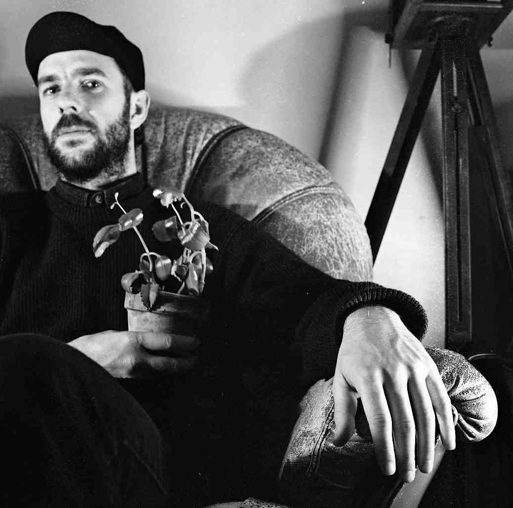
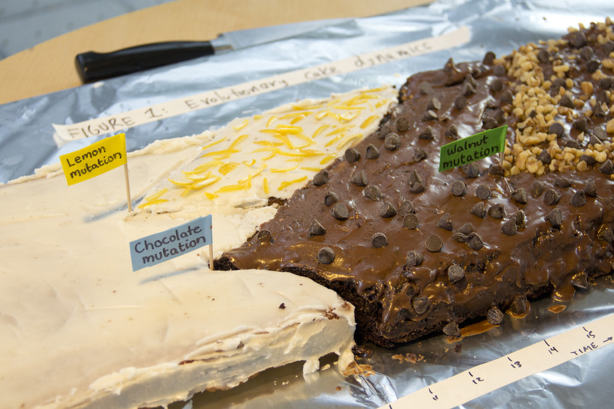
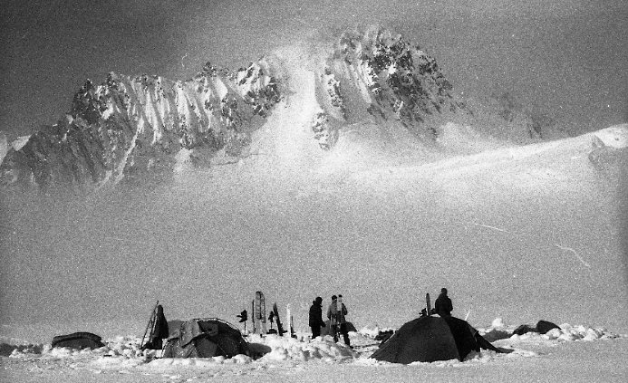
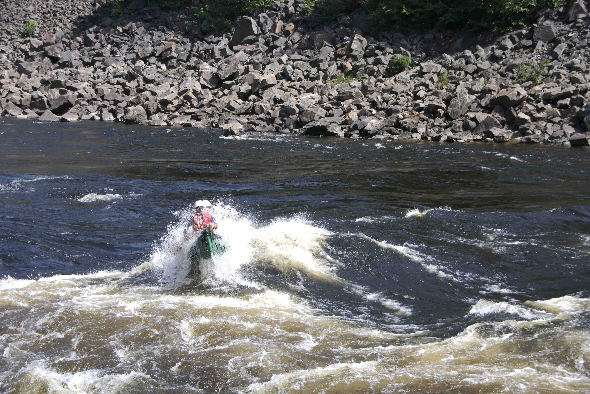
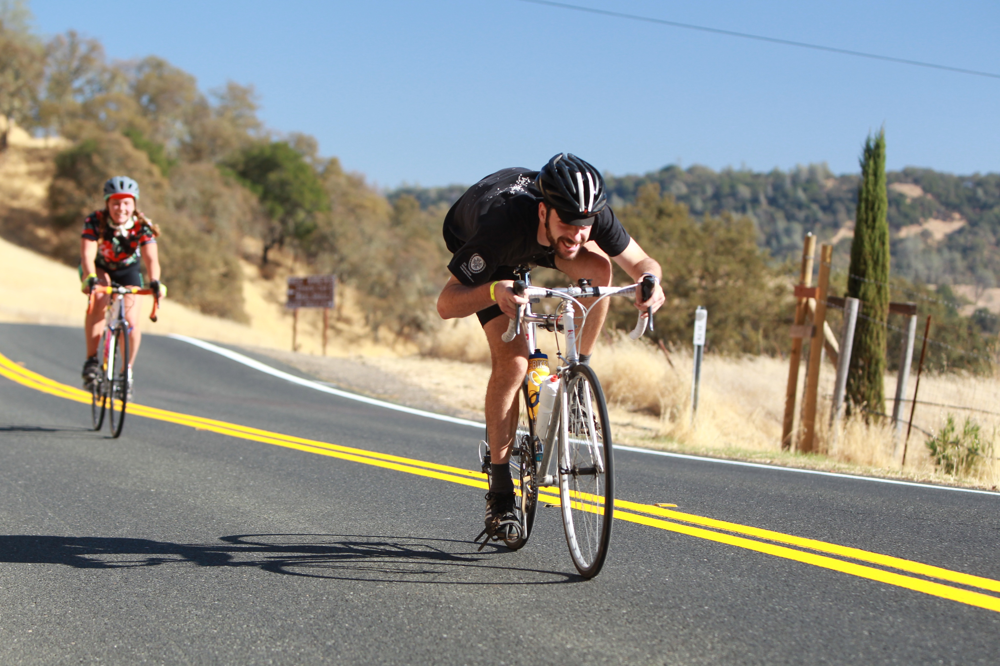

MATTHEW MILES OSMOND
Post-doc | Coop, Schreiber, & Whitehead labs
| UC Davis Center for Population Biology | CV



RESEARCH INTERESTS
I am an evolutionary theoretician investigating how ecological and genetic factors influence the evolutionary process, and vice versa.
My primary interests are evolutionary rescue, the effect of genetic backgrounds and linkage, and metabolic scaling theory.
I am now building methods to infer past eco-evolutionary dynamics (esp. rescue) from extant genomic data.
POSITIONS
Center for Population Biology & Banting Postdoctoral Fellow, University of California - Davis, Davis, USA 2018 -
Postmaster, Klausmeier & Litchman labs, Michigan State University, Hickory Corners, USA, 2013
EDUCATION
Ph.D., Zoology, University of British Columbia, Vancouver, Canada, 2013 − 2018
- with Sally Otto
M.Sc., Biology, McGill University, Montreal, Canada, 2010 − 2012
- with Claire de Mazancourt
B.Sc.H., Biology & Mathematics, Queen’s University, Kingston, Canada, 2004 − 2008
- honours thesis with Laurene Ratcliffe and Matt Reudink
PUBLICATIONS (Google Scholar)
Pre-prints
Thompson KA, Osmond MM, Schluter D. 2018. Paralllel genetic evolution and speciation from standing variation. bioRXiv 368324.
bioRXiv
Peer-reviewed
Edwards KF, Kremer CT, Miller ET, Osmond MM, Litchman E, Klausmeier CA. 2018. Evolutionary stable communities: a framework for understanding the role of trait evolution in the maintenance of diversity. Ecology Letters 21:1853-1868.
doi
(email me for a pdf)
Scott MF*, Osmond MM*, Otto SP. 2018. Haploid selection, sex ratio bias, and transitions between sex-determining systems. PLoS Biology 16:e2005609. [* joint first authors]
doi
bioRXiv
presentation
"press"
Osmond MM, Klausmeier CA. 2017. An evolutionary tipping point in a changing environment. Evolution 71:2930-2941.
doi
git
slides
shiny app
Osmond MM, Otto SP, Klausmeier CA. 2017. When predators help prey adapt and persist in a changing environment. The American Naturalist 190:83-98.
doi
git
presentation
stop motion animation
F1000Prime
"press"
Osmond MM, Barbour MA, Bernhardt JR, Pennell MW, Sunday JM, O'Connor MI. 2017. Warming-induced changes to body size stabilize consumer-resource dynamics. The American Naturalist 189:718-725.
doi
git
Toews DPL, Delmore KE, Osmond MM, Taylor PD, Irwin DE. 2017. Migratory orientation in a narrow avian hybrid zone. PeerJ 5:e3201.
doi
pdf
Osmond MM, Otto SP. 2015. Fitness-valley crossing with generalized parent-offspring transmission. Theoretical Population Biology 105:1-16.
doi
git
bioRXiv
slides
poster
Osmond MM, Reudink M, Marra P, Germain R, Nocera J, Boag P, Ratcliffe L. 2013. Relationships between carotenoid-based female plumage and age, reproduction, and mate colour in the American Redstart (Setophaga ruticilla). Canadian Journal of Zoology 91:589-595.
doi
pdf
Osmond MM, de Mazancourt C. 2013. How competition affects evolutionary rescue. Philosophical Transactions of the Royal Society B 368:20120085.
doi
post-pre-print
poster
slides
Other
Osmond MM. 2018. Adaptive challenges: fitness-valley crossing and evolutionary rescue. PhD thesis.
pdf
Osmond MM. 2012. Eco-evolutionary rescue: an adaptive dynamic analysis. MSc thesis.
pdf
Cragg J, Burger A, Osmond MM. 2011. Radar monitoring of Brachyramphus murrelets on Kodiak Island, 2010. Report to U.S. Geological Survey, Anchorage, Alaska.
pdf
FUN STUFF
Bird Clines (2013)
Birds Hit Windows (2017)
All About That Base (R) (2017)
CONTACT
email: mmosmond [an a with some swirlies around it] gmail [sentence ender] com
office: Room 3346, Storer Hall, UC Davis
snail mail:
University of California - Davis
Department of Evolution and Ecology
Rm 2320 Storer Hall
One Shields Avenue
Davis, CA 95616 USA


